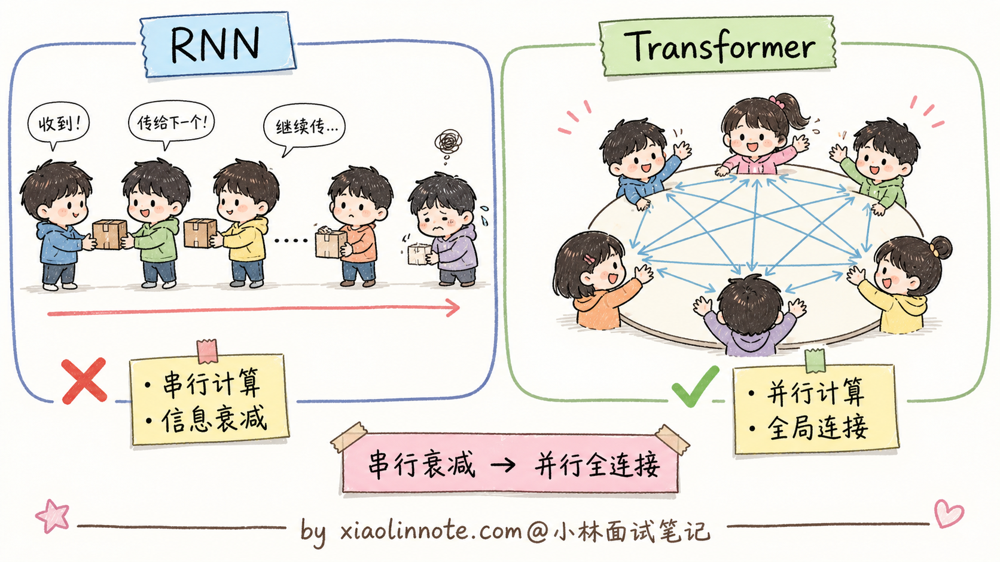
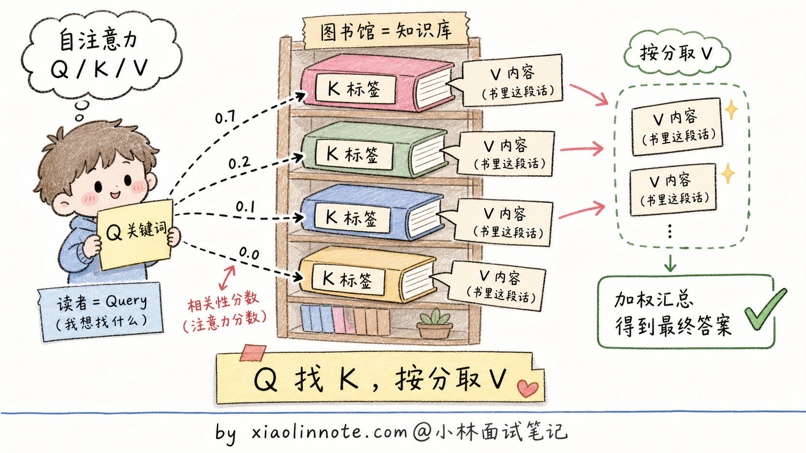
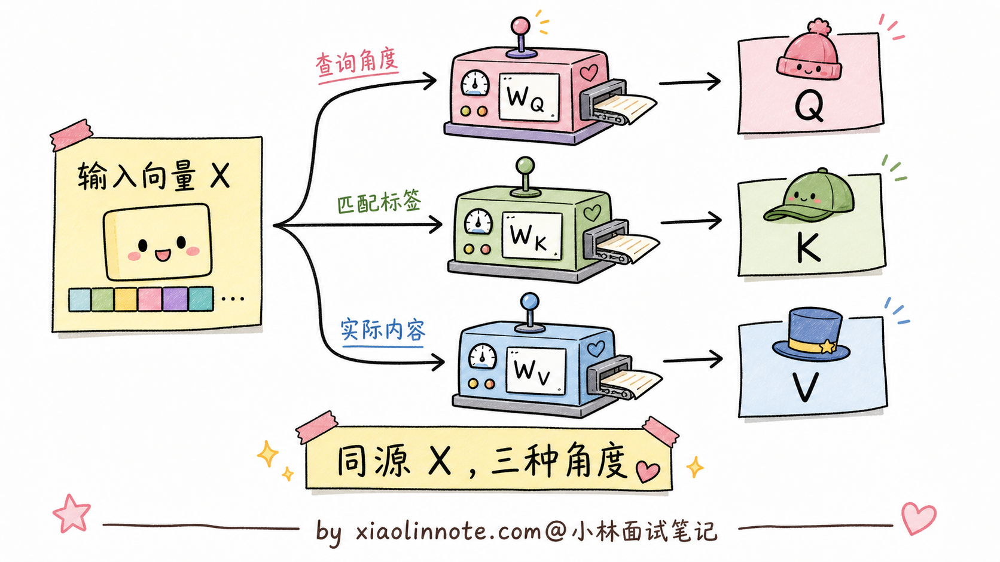
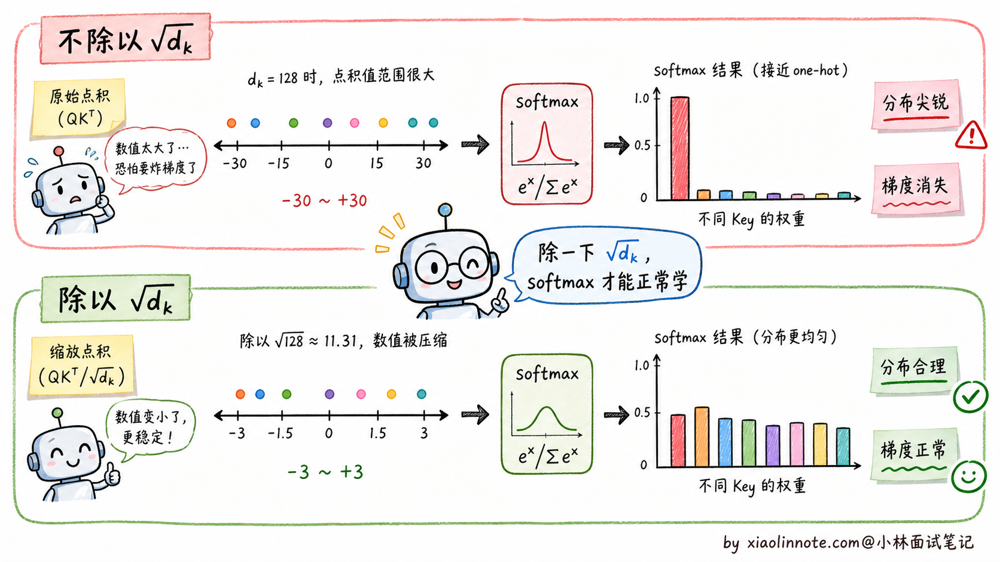
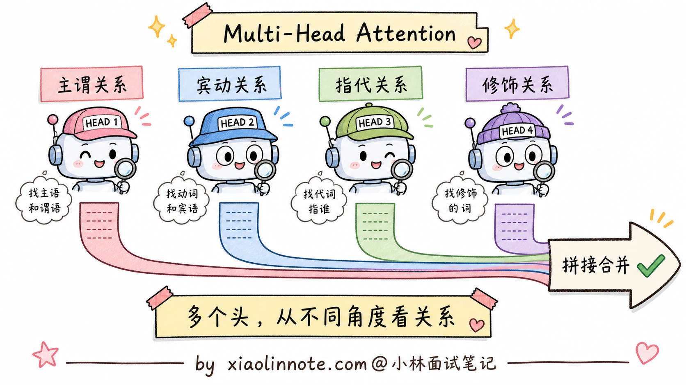
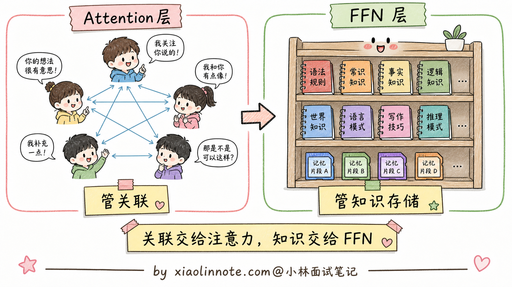
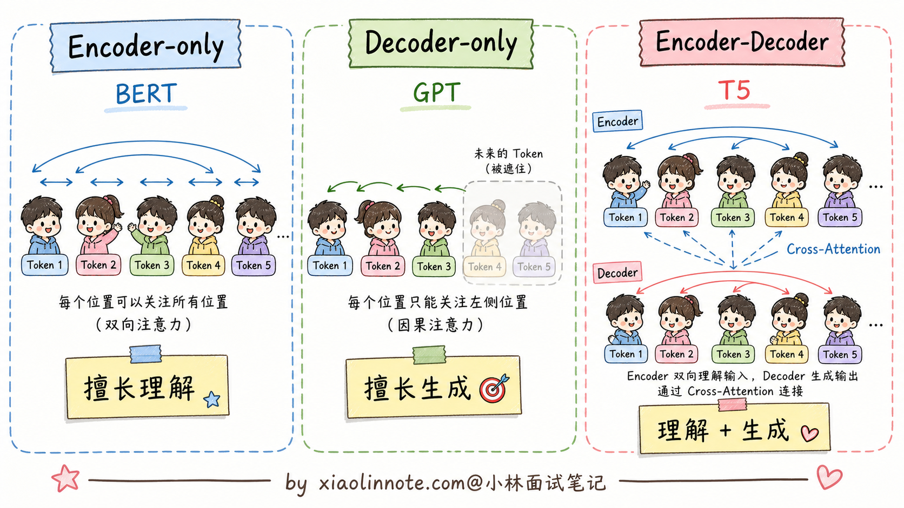
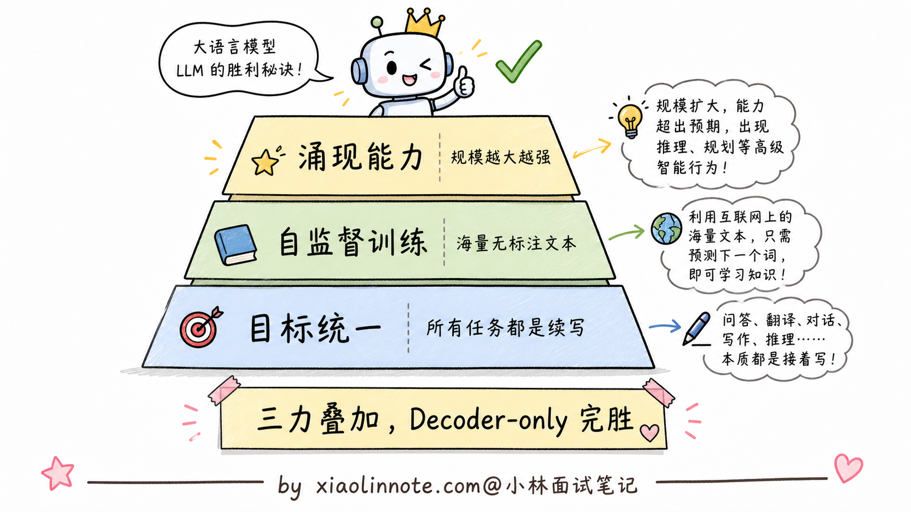

讲讲 Transformer 架构基本原理？Encoder 和 Decoder 是什么？
👔面试官：来讲讲 Transformer 架构的基本原理？Encoder 和 Decoder 是什么？
🙋♂️我：Transformer 是 Google 提的一个新架构，核心是 Attention，效果比 RNN 好很多。Encoder 是编码器，Decoder 是解码器。
👔面试官：……「编码器」「解码器」是中文翻译，我问的是它们具体在做什么，不是字面意思。再说，Attention 凭什么比 RNN 好？RNN 到底有什么致命缺陷？
🙋♂️我：哦哦，应该是 RNN 太慢了，Attention 能并行计算？
👔面试官：方向对了一半。但你只说了「快」，没说「准」。RNN 还有一个更致命的问题，长距离信息会衰减，第 1 个词的信息传到第 800 个词基本就没了。Attention 怎么解决这个问题的，能讲清楚吗？
🙋♂️我：呃……Attention 让每个词都能看到所有其他词？
👔面试官：勉强能说出来。那再问一个：BERT 用的是 Encoder-only，GPT 用的是 Decoder-only。为什么现在主流大模型（GPT、Claude、Qwen）全部选择了 Decoder-only？这种架构选型背后的原因，你能讲清楚吗？
🙋♂️我：呃……
👔面试官：典型的「知道有但讲不清」。Decoder-only 赢的根本原因是「预测下一个 token」这个训练目标极其统一，所有 NLP 任务都能用它表达。这种「为什么 X 赢了 Y」的演进逻辑搞不清楚，去面试就是被怼。回去补一下。
这几个反问串起来其实就是一条主线，Transformer 这道题想听的不是「Attention is all you need」这种口号，而是 RNN 卡在哪两点、Attention 怎么把这两点都破了、三种架构变体打了一圈为什么是 Decoder-only 赢到现在。
💡 简要回答
我理解 Transformer 最核心的创新是 Self-Attention，让每个 token 都能直接和序列里任意其他位置建立联系，一次性并行计算，彻底解决了 RNN 顺序计算慢、长距离信息衰减的两个老问题。理解 Encoder 和 Decoder 的区别时我用这个角度：Encoder 是双向的，每个词能同时看前后文，适合做「理解」类任务；Decoder 是单向的，只能看前面的词，天然适合「生成」任务。至于为什么现代大模型（GPT、Claude、Qwen）都选 Decoder-only，核心原因是「预测下一个 token」这个训练目标极其统一、可以直接在海量无标注文本上做自监督学习，规模越大涌现出的能力越强。
📝 详细解析
Transformer 之前：RNN 的致命缺陷
在 Transformer 出现之前，处理序列数据的主流方法是 RNN（循环神经网络）及其变体（LSTM、GRU）。RNN 的问题有两个，而且都是致命的。
第一个是顺序计算，无法并行。RNN 处理序列的方式是从左到右逐个处理每个词，第 N 步必须等第 N-1 步计算完才能开始，无法利用 GPU 的并行计算能力。这导致训练大型 RNN 极慢。
第二个是长距离梯度消失。当序列很长时（比如 1000 个词），RNN 理论上能记住早期的信息，但实践中梯度在反向传播时会指数级衰减，网络很难学习到「第 1 个词和第 800 个词之间的关系」。LSTM 通过门控机制有所缓解，但根本问题没解决。
2017 年 Google 在论文《Attention is All You Need》里提出了 Transformer，用一个全新的架构一举解决了这两个问题。

Self-Attention 的核心直觉
Self-Attention（自注意力）的核心思路是：让序列中的每个 token 都能直接关注序列中任意其他位置的 token，计算出「我和其他位置的相关程度」，然后根据相关程度加权聚合其他位置的信息。
这里有三个关键向量：Q（Query，查询）代表「我想找什么」，K（Key，键）代表「我有什么标签」，V（Value，值）代表「我的实际内容」。
可以用图书馆检索来类比：你有一个搜索关键词（Q），图书馆里每本书都有标签（K）和内容（V）。注意力机制就是用你的关键词（Q）去匹配每本书的标签（K），计算出相似度分数，然后按照分数的权重把书的内容（V）加权求和，得到你的搜索结果。

Q/K/V 是怎么从输入变换得到的
很多人讲 Self-Attention 容易卡在「Q/K/V 是从哪儿冒出来的」这一步。其实 Q/K/V 不是模型「凭空生成」的，而是把输入 embedding 通过三个独立的线性投影矩阵 W_Q、W_K、W_V 算出来的：
# 假设输入 X 是 (序列长度 N, embedding 维度 d_model)
# W_Q, W_K, W_V 都是可训练参数矩阵，形状 (d_model, d_k)
Q = X @ W_Q # 形状 (N, d_k)，每个 token 都有自己的 Query 向量
K = X @ W_K # 形状 (N, d_k)，每个 token 都有自己的 Key 向量
V = X @ W_V # 形状 (N, d_v)，每个 token 都有自己的 Value 向量

这一步就是面试里常被追问的「Q/K/V 是怎么得到的」。理解的时候有几个关键点要抓住。
最关键的一点是 Q/K/V 都是从同一个输入 X 算出来的。也就是说，输入既要扮演「提问者」（Q），也要扮演「被查者」（K + V），这就是「自注意力」里那个「自」字的含义，区别于 Encoder-Decoder 架构里 Cross-Attention 那种「Q 来自一边、K/V 来自另一边」的形式。
然后 W_Q、W_K、W_V 是三个独立学习的矩阵。这是个容易被忽略的细节，但很重要。如果让 Q/K/V 都直接等于 X 不做变换，模型就没法学到「该从什么角度提问」「该用什么标签匹配」「该返回什么内容」这种细致的差异。三个独立投影让模型有 3 倍的自由度去学习这种角度上的差异，模型容量大幅提升。
还有一个工程细节是投影维度 d_k 通常等于 d_model / H（H 是头数）。比如 d_model=512、H=8 时，d_k=64。这样做的目的是让多头总参数量和单头版本基本一致，不增加额外的计算开销。
到这里，Q/K/V 三个向量就准备好了，可以代入注意力公式：
Attention(Q, K, V) = softmax(Q · K^T / √d_k) · V
为什么要除以 √d_k：缩放点积的数学直觉
公式里的 /√d_k 这一步常被叫做 Scaled Dot-Product Attention（缩放点积注意力）。这个 √d_k 不是随便加的，背后有具体的数学动机。
直觉上的问题是这样的：当 d_k 很大时（比如 d_k=128），Q 和 K 都是 128 维的向量，它们的点积是 128 个数相加。假设 Q 和 K 的每一维都是均值 0、方差 1 的随机数，那么点积 Q·K 的方差就是 d_k=128，标准差是 √128 ≈ 11.3。
这意味着点积的数值会散布在 -30 到 +30 这种很大的范围。然后这些数过 softmax 会发生什么？softmax 对极端大的输入特别敏感，最大的那个数对应的概率会接近 1，其他数的概率会接近 0，输出几乎变成 one-hot 分布。

one-hot 分布的问题是梯度消失。softmax 的梯度公式里有 p · (1-p) 项，p 接近 0 或 1 时梯度都接近 0。整个 Attention 层的反向传播信号被压扁，模型训不起来。
除以 √d_k 之后，点积的方差被压回 1，softmax 输出分布合理，梯度能正常传播。
那能不能用其他方案替代 √d_k？理论上可以，但 √d_k 是数学上最自然的选择。
业界确实尝试过几种替代方案。一种是用 Layer Norm 来归一化，比如某些 Attention 变体（Pre-LN Transformer）会在 Attention 之前先把输入归一化到固定范围，这样后续的点积值天然就不会爆炸。但严格来说这是「在 Attention 之前做归一化」，不是真的替换 √d_k 本身。另一种是让模型自己学一个 scaling 参数，用一个可学习的标量代替 √d_k。实测效果和 √d_k 差不多，但增加了可学习参数，反而不如固定常数简洁。还有一种早期方案是直接限制 d_k 很小（比如 d_k=8），让点积自然不会爆炸，但这等于直接限制了模型的容量，不划算。
实践中所有主流 Transformer 实现（GPT、LLaMA、Qwen 等）都用 √d_k，没有改。这是一个被 8 年实践验证的「简单且数学上合理」的选择。
回到主线：除以 √d_k 之后，softmax 的输出就是稳定的注意力权重，再用这些权重对 V 做加权求和，就得到了 Self-Attention 的最终输出。整个过程对序列中所有位置的计算是可以并行的，完美解决了 RNN 的并行问题；而且每对位置之间都有直接连接（通过注意力分数），不存在长距离信息衰减的问题。
Multi-Head Attention：多角度观察
单组 Q/K/V 只能学习到一种「关联关系」，但语言中的关联是多维度的：「我」和「吃」是主谓关系，「苹果」和「吃」是宾动关系，「苹果」和前文的「苹果树」是指代关系，这些不同类型的关联需要不同的「注意力头」来捕捉。
Multi-Head Attention 就是把 Q/K/V 投影到多个不同的子空间（比如 8 个或 32 个头），每组独立计算注意力，最后把所有头的输出拼接起来。每个头可以专注于捕捉不同类型的语言关联，整体上表达能力更强。

位置编码：注入顺序信息
Self-Attention 有一个天然的缺陷：它的计算是对称的，不考虑词的顺序。「我打你」和「你打我」对 Attention 来说可能得到一样的结果，因为它只看哪些词相关，不看谁在前谁在后。
所以需要显式地给每个 token 注入位置信息，这就是位置编码。具体的位置编码方案有 sin/cos、RoPE、ALiBi 等多种选择，每种各有不同的设计哲学和长上下文外推能力，是一个独立的研究方向。本节只需要知道 Transformer 是通过加上位置编码来让模型感知词序的就够了。
前馈网络（FFN）的作用
除了注意力层，每个 Transformer 块里还有一个前馈网络（Feed-Forward Network），结构是两层全连接加一个激活函数。
FFN 对每个位置独立地做非线性变换，补充注意力层学不到的信息（注意力层本质上是线性加权，FFN 引入非线性）。研究表明 FFN 层储存了大量的「事实知识」，可以理解为模型的「记忆仓库」。

Encoder-only、Decoder-only 和 Encoder-Decoder 三种架构
理解了 Attention 的基本机制，可以解释这三种架构的区别。
- Encoder-only（以 BERT 为代表）：每个 token 可以双向关注序列中所有其他 token（没有遮蔽）。这种双向理解能力让 Encoder 非常擅长「理解任务」，比如文本分类、命名实体识别、语义相似度计算。预训练目标是 MLM（掩码语言模型），随机遮住一些词让模型预测。
- Decoder-only（以 GPT/Claude/Qwen 为代表）：使用因果掩码（Causal Mask），每个 token 只能关注它前面的 token，不能「提前看到」后面的内容。这种单向设计天然适合文本生成，预训练目标是「预测下一个 token」（CLM），目标统一而强大。现在几乎所有大语言模型都是这个架构。
- Encoder-Decoder（以 T5、BART 为代表）：Encoder 双向理解输入，Decoder 单向生成输出，Decoder 通过 Cross-Attention 读取 Encoder 的输出。这种架构适合「输入和输出是不同的文本」的任务，比如翻译、摘要、问答。但预训练目标相对复杂，超大规模训练不如 Decoder-only 简洁。

为什么 Decoder-only 赢了
现代通用生成式大模型为什么大多选择 Decoder-only 架构？这是面试里最容易被追问的点。
根本原因是「预测下一个 token」这个目标极其统一。所有类型的任务（问答、写作、推理、代码生成、翻译）都可以统一表达成「续写」这一件事，不需要区分「这是理解任务」还是「那是生成任务」，一套训练目标搞定一切。
更关键的是，这个目标可以直接在海量无标注文本上做自监督训练。互联网上的大量公开文本天然可以构造成训练样本，不需要像传统监督任务那样逐条人工标注。这一点是 BERT 那种 MLM 目标做不到的（MLM 也是无标注，但训练效率不如 CLM 适合 scale up）。
最厉害的是，随着模型规模增大，这个简单目标下涌现出的能力越来越强。模型从「会续写文本」开始，逐渐学会数学、推理、代码、跨语言迁移……这些能力都是「预测下一个 token」这个目标在足够大规模下自然涌现的。
所有这些特性加在一起，使得 Decoder-only 架构在大规模生成式预训练时代取得了压倒性的优势。Encoder-only 和 Encoder-Decoder 这两种架构并没有消失，它们在检索、分类、嵌入、翻译、摘要等场景仍然有价值；只是如果目标是做一个通用对话和生成模型，Decoder-only 更容易 scale up，也更符合「一个模型续写所有任务」的统一接口。

🎯 面试总结
回到开头那段对话，问到 Transformer 架构，最重要的是先把 RNN 的两个致命缺陷讲清楚，因为这是 Transformer 出现的动机。RNN 顺序计算无法并行（训练慢）+ 长距离梯度消失（看不到远处），这两个问题在序列稍长就会致命。
接下来讲 Self-Attention 怎么解决的。每个 token 通过 Q、K、V 三个独立的线性投影变换得到查询、键、值向量，然后用 Q 去和所有 K 做点积算注意力分数，按分数加权聚合所有 V。这一段能讲到「Q/K/V 是从同一个 X 通过三个独立矩阵投影得到的」「除以 √d_k 是为了防止点积过大让 softmax 变 one-hot 导致梯度消失」这两个细节，就比一般候选人深刻一层了。
最关键的一句话是讲清为什么 Decoder-only 赢了。「预测下一个 token」这个目标极其统一，所有 NLP 任务都能用它表达；可以直接在海量无标注文本上做自监督训练；规模越大涌现的能力越强。这种「目标统一 + 数据规模 + 涌现」的组合让 Decoder-only 在大模型时代完胜。
如果还想再加分，可以提一句「FFN 层储存了大量事实知识，可以理解为模型的『记忆仓库』」这种从可解释性角度看 Transformer 的视角。能讲到这一层，面试官就知道你不是只在背架构图，是真的理解了 Transformer 的设计哲学。